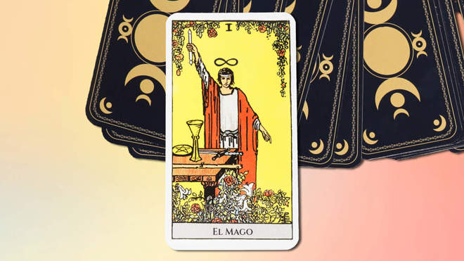

El Mago

El Mago en el Tarot significa poder creativo y personal. Es el primer arcano de la jerarquía y, por lo tanto,
es el primer paso en la búsqueda de la sabiduría. Esta carta representa el alma del deseo, el primer escalón
que debemos subir en busca de la autorrealización.
Dependiendo de su posición, puede significar:
- Al derecho: es una carta auspiciosa, que marca el comienzo de algo nuevo. Está relacionada con la imaginación
y la originalidad, habilidades que pueden emplearse para el bien o para el mal.
- Invertida: representa el rechazo al compromiso. Estás buscando una forma fácil de escapar. Indica debilidad.
La estrella

La Estrella en el Tarot significa esperanza, inspiración e iluminación. Es la representación de la conexión con el
universo, la fe en el futuro y la guía divina. Esta carta inicia el ascenso místico del alma a través de los cuerpos
celestes, en búsqueda de iluminación espiritual.
Dependiendo de su posición, puede significar:
equilibrio adecuado. Los resultados son favorables.
Invertida: indica decepción, desequilibrio y pesimismo.
Los enamorados

Los Enamorados en el Tarot significa el amor, la elección y la armonía en las relaciones. Es la representación de la toma de decisiones y la unión espiritual. Esta carta personifica el deseo más allá de la razón.
Dependiendo de su posición, puede significar:
Al derecho: armonía, amor, confianza, honor, gozo y satisfacción de los deseos. Puede indicar el inicio de una nueva relación o el de una nueva fase en una ya existente.
Invertida: señala inconstancia y falta de confianza.
El colgado

El Colgado en el Tarot significa entrega, renuncia y suspensión. Representa la necesidad de hacer sacrificios, ver las cosas desde una perspectiva diferente y aceptar la espera. Esta carta está relacionada con el dolor y la pérdida del ego que el alma necesita para completar su búsqueda espiritual.
Dependiendo de su posición, puede significar:
Al derecho: representa sufrimiento y vergüenza, pérdida de ego, autoestima y riqueza material. Es el aviso de un periodo en el limbo entre acontecimientos importantes. También puede señalar la suspensión de toda acción, la transición y el cambio de camino. Se la relaciona con el sacrificio y el arrepentimiento.
Invertida: señala un sacrificio inútil, así como la incapacidad de dar lo que se necesita. Significa egoísmo.